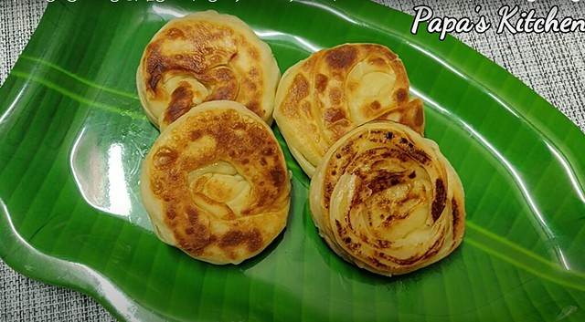

The hot weather in Madurai lends itself to this sharbat. Tender coconut, manner syrup, lemon juice, and ice cubes combine to make this refreshing cocktail. The only thing left to do after making this drink is to serve it chilled to get the full flavour.
Kothu Parotta
This kothu parotta is the most widely available street food in Madurai, and it is also the most popular among Madurai residents. They can be made with leftover parotta or fresh parotta, and they come in both vegetarian and non-vegetarian varieties.

Bun Parotta
Parotta is a fantastic recipe in and of itself, but there are no words to explain the taste of bun parotta. Buns, butter, milk, egg, sugar, and banana are used to make these.These are flaky, and they resemble buns in appearance.
Keerai Vada
This South Indian teatime snack is popular in the region. It's commonly found in Madurai's roadside tea stalls. It's made with crushed urad dal, water, dried and powdered Mulmurungai leaves, cumin, and pepper powder.
Mutton Chukka
This delectable recipe is well-known in the Madurai region; the flavour is indescribable, and it's a must-try for all non-vegetarians. Mutton bits, coriander powder, chilli powder, and cumin seed powder are used to make this chukka varuval.
Kari Dosa
Mutton Kari Dosa is made with mutton chukka, dosa batter, chopped onions, oil, ginger garlic paste, curry leaves, and fennel seeds and is also known as Mutton Kari Dosa.This mini dosa becomes a delectable mouth-watering dish when eggs and chettinad masala are added.
Kola Urundai
This minced mutton ball is a culinary delight, made with minced meat and a variety of spices to enhance the flavour. It is then deep-fried in oil, which causes the exterior to become crunchy. These can be found in a variety of stores, but the best ones can be found at Amma Mess, Kumar Mess, Konar Mess, and Chandran Mess. Don't miss out on this opportunity.
Jigarthanda
Manner syrups, badam pisin, condensed milk, and ice cream are used to make them. It is essential to soak this badam pisin overnight in order to increase the volume of the drink. This jigarthanda must be served chilled immediately after assembling the glass with badam pisin and other ingredients.